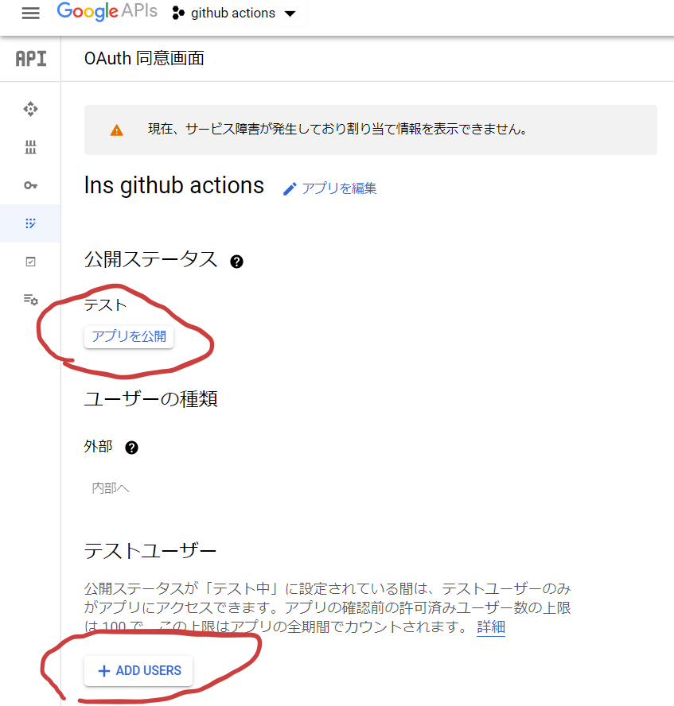

LuneScript の CI 環境として github actions を使用している。 この CI のテスト時にビルドした go 版 LuneScript のシングルバイナリを、 google drive にアップロードして公開するように対応した。
<https://drive.google.com/drive/folders/1S5NgeM6qIOIUC0rkBHqnWZcuhmsTqB2w>
今回は、この手順について説明する。
公開方法
基本的には次の手順に従えば出来るが、 Google の UI の一部が変っているので、そこを主に補足していく。
skicka
google drive へのアップロードは skicka を利用する。
skicka は OSS だ。
この skicka を利用するためには、 OAuth2 認証 ClientID と Client Secret が必要になる。
OAuth2 認証は、ウェブサービス間のアクセス権を管理するもので、 今回は skicka が google drive へアクセスするための権利を取得するために OAuth2 が必要になる。
OAuth2 ClientID と Client Secret
前述の通り OAuth2 は、ウェブサービス間のアクセス権を管理する。 ここでは google drive と skicka の間のアクセスが対象となる。 では OAuth2 ClientID が何故必要になるかというと、 アクセス権を求めて来ているのが何者で、どのようなサービスなのか？ということを google とユーザ自身が認識するのに利用するためだ。
世の中には google drive にアクセスするサービスが大量にあるが、 それらは全て個々の ID が割り振られている。
そして Client Secret は、 ClientID を使用しているサービスが、 本当にその ClientID の所有者かどうかを判断するために利用する鍵のようなものだ。
ClientID と Client Secret によって、 なりすましによる サービスへの不正アクセスを防止している。 (なりすましの防止というか、 誰がアクセスしようとしているのか？を確認する手段を提供している)
skicka に ClientID と Client Secret が必要な理由
ClientID は、そのサービスが何者なのかを識別するためのものなので、 サービス提供者と ClientID の保有者は同じなのが普通である。
しかし、 skicka はオープンソースのツールであり、 もちろん作者は私ではない。 それなのに skicka を利用するために私が ClientID, Secret を用意する必要がある。
それは何故か？
少し話が逸れるが、 twitter クライアントアプリには公式アプリ意外にも様々なアプリがある。 あれらのアプリを利用する際にアカウントの認証は行なうが、 ユーザは ClientID, Secret を用意しなくて良い。
この違いは何かというと、 skicka はツールそのものを提供しているのに対し、 twitter クライアントアプリはサービスを提供している。
別の言い方をすると、 *skicka は使用者自らがサービス提供者* になり、 *twitter クライアントアプリは、 アプリ開発者がサービス提供者* になる。
この違いを認識していないと、 これ以降の作業に問題が生じた時に対処が難しくなるのと、 セキュリティの考え方にも影響してくるので、注意が必要だ。
ClientID / Client Secret 取得方法
取得方法は次の URL の手順に従う。
<https://qiita.com/satackey/items/34c7fc5bf77bd2f5c633>
ただし次の点に注意する。
- アプリケーションのタイプを選択する箇所があるが、 この時「テレビと入力機能が限られているデバイス」を選択する。
この選択を間違えると、 OAuth2 認証が失敗する。
トークン取得方法
上記 URL の手順に従うとトークン取得まで行なえる。
しかし、次の点に注意が必要である。
認証を通す前に、次の画面で設定が必要になる。

2箇所をマークしてあるが、それぞれ次の意味である。
-
アプリを公開
- デフォルトでは、サービスがテスト状態になっている。
- テスト状態では、事前に登録したアカウントだけが認証が通るようになっている。
- つまり、事前にアカウントを登録しておかないと、 上記 URL の手順の OAuth2 認証が通らない。
- 逆に言えば、事前にアカウントを登録すれば、サービス設定を公開に変更する必要はない。
- skicka は個人で使うので、サービスを公開してもリスクしかない。 よって、ここはテスト状態のままにする。
-
ADD USERS
- 前述した通り、テスト状態では事前にアカウントを登録しておかないと OAuth2 認証が通らない。
- ここでは、そのアカウントの登録を行なう。
- アカウント情報は、許可するアカウントのメールアドレスをセットする。
- なお、 Client ID を発行したアカウントと、 OAuth2 認証を許可するアカウントが別でも良い。
上記の通り事前にアカウントを登録しておくことで、 OAuth2 認証が通る。
なおこの設定で OAuth2 を通すと警告ページが表示されるが、 これはサービスがテスト設定の状態なための警告なので、 そのまま進めて問題ない。
以上